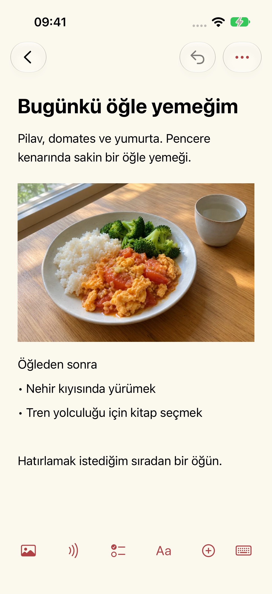
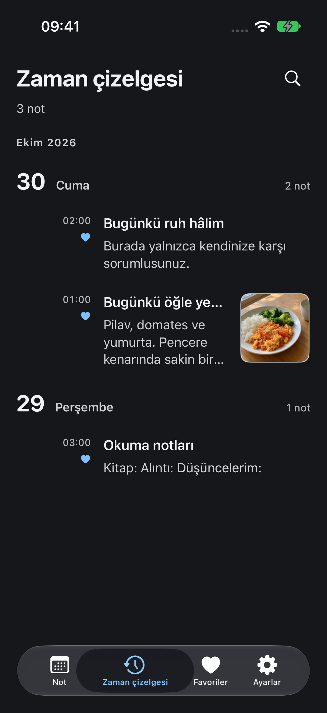

Yardım ve destek
Güncelleme: 2026-10-29
iOS kablosuz veri izni istemi hakkında
Bazı iPhone’larda Hızlı Not veya bir metin alanı açıldığında görünen kablosuz veri izni istemini araştırıyoruz. Mikrofon düğmesine dokunmadan veya dikteyi kullanmadan da bu istem görünebilir. Bunun yol açtığı endişe ve rahatsızlık için içtenlikle özür dileriz. Konuya öncelik veriyor, mümkün olan en kısa sürede bir geçici çözüm ve düzeltme bulup bunları doğrulamak için çalışıyoruz.
Bu sorun için incelediğimiz kaynak kodunda ve topladığımız günlüklerde, Mowyns’in kendi uygulama kodundan başlatılan uzak sunucu isteklerine veya notların, eklerin ya da ses kayıtlarının yüklendiğine dair kanıt bulamadık. Mevcut bulgular, iOS metin girişi ya da sistem klavyesinin dikte bileşenleri tarafından başlatılan bir ağ kullanılabilirliği kontrolüne işaret ediyor. Bu kontrol uygulamanın işlemi içinde çalışabildiği için istemde uygulamanın adı gösterilir; istemin görünmesi tek başına içeriğinizin yüklendiği anlamına gelmez. Bu bulgular mevcut incelemeyle sınırlıdır ve tüm sistem bileşenlerinin ağ etkinliğini kapsayan eksiksiz bir denetim değildir.
Bu istemi iOS 27.0.1’de yeniden ürettik. Apple’ın resmî geliştirici forumlarında iOS 26.4, 26.5 ve iOS 27 beta sürümleri için de benzer bildirimler var. Apple Teknik Destek, ilgili bildirimleri r.183584353 numaralı dahili sorunla ilişkilendirdi. Mevcut bulgular sistemin metin girişi davranışına işaret ediyor; istemin bir Mowyns güncellemesinden kaynaklandığını kanıtlamıyor. Apple da bu uygulamadaki somut nedeni henüz doğrulamadı. Bu açıklamanın güncellendiği tarih itibarıyla kamuya açık tartışmada sorunu gideren bir işletim sistemi sürümü veya herkese açık API çözümü duyurulmadı. İstemi güvenilir biçimde ortadan kaldıran bir düzeltmeyi henüz doğrulayamadık.
İstem göründüğünde “İzin Verme”yi seçin; metinleri cihazda düzenlemek ve kaydetmek için kablosuz veri erişimi gerekmez. Mevcut uygulamanızı koruyun: istemi kaldırmak veya eski sürüme dönmek amacıyla uygulamayı silmeyin; silmek cihazdaki notları da kaldırır. Gerekirse önce “Yedekleme ve taşıma” üzerinden bir yedek dışa aktarın. Sistem klavyesinin dikte özelliği ve bağlantı açma, paylaşma ya da bulut dosya hizmetlerini kullanma gibi sizin başlattığınız işlemler, kendi ayarlarına ve politikalarına tabi olmaya devam eder.
Mowyns'i neden yaptım?
Basit, kullanışlı ve tamamen ücretsiz bir kayıt aracı arıyordum. Uzun süre aramama rağmen bana uygun bir şey bulamadım. Bu yüzden Mowyns'i yaptım; günlük hayatımda ben de kullanıyorum.
Bugünün kendi sayfası var
Defterimi açtığımda bugünü görmek istedim. Takvim her seferinde bir günün kayıtlarını gösterir; dünkü notlar dünde kalır. Geriye bakmak istediğinizde bir tarih seçin veya zaman çizelgesinde gezinin. Eski kayıtlar saklanır, yeni güne de yer açılır.




Not
Öğle yemeğinizin fotoğrafını çekip birkaç kelime ekleyin. Yapmak istediğiniz bir şeyi not edin. Yazı, fotoğraf ve ses kayıtları aynı notta bir arada durabilir.
Tarih
Seyahatten önce tren bilgilerini, koltuk numaralarını, bilet ekran görüntülerini ve gezilecek yerleri ilgili tarihlere kaydedin. O gün geldiğinde sayfayı açın; planınız hazır olsun. Birkaç günlük not, basit bir gezi planına dönüşebilir.
Takvim
Günün listesinin en üstünde bir kez aşağı çekerek takvimi, bir kez daha çekerek hızlı aramayı açın. Takvim kapalıyken tarih başlığını sağa veya sola kaydırarak önceki ya da sonraki güne geçin.
Görünüm
Tema rengini ve açık ya da koyu görünümü seçin. Metin boyutunu ve satır aralığını kendinize göre ayarlayın.
Yeni not
Yeni Not'u seçip başlık ve metin girin. Düzenleyicinin alt araç çubuğundan fotoğraf, kayıt, liste, tablo ve dosya ekleyebilirsiniz.
Yedekleme ve taşıma
Notlar bu cihazda kaydedilir. Ayarlar → Veri Yönetimi → Yedekleme ve Taşıma bölümünden standart veya şifreli yedekleri içe ve dışa aktarabilirsiniz. Otomatik eşzamanlama yoktur; kendi yedeklerinizi saklayın.
Kayıt dökümü
Uygulama kamera veya mikrofon iznini yalnızca fotoğraf çekerken, tararken veya kayıt yaparken ister. Fotoğraf ve dosyaları sistem seçicileriyle siz seçersiniz. Bu izinleri reddetmek metin notları yazmanızı engellemez. Döküm, sistem konuşma tanıma izni gerektirir ve yalnızca cihazda yapılır. Cihaz veya dil desteklenmiyorsa kayıt korunur ve dökümün kullanılamadığı bildirilir. Uygulama bulut tanımaya geçmez. İzinleri sistem ayarlarından geri alabilirsiniz.
Son silinenler
Bir notu geri yüklemek için Ayarlar → Veri Yönetimi → Son Silinenler'i açın. Kalıcı silmeden sonra daha önce dışa aktardığınız yedek gerekir. Geliştirici notlarınızın kopyasını tutmaz.